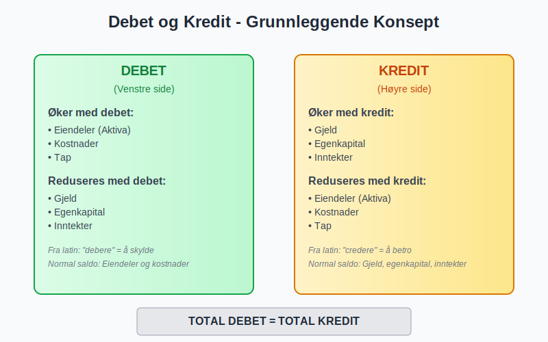
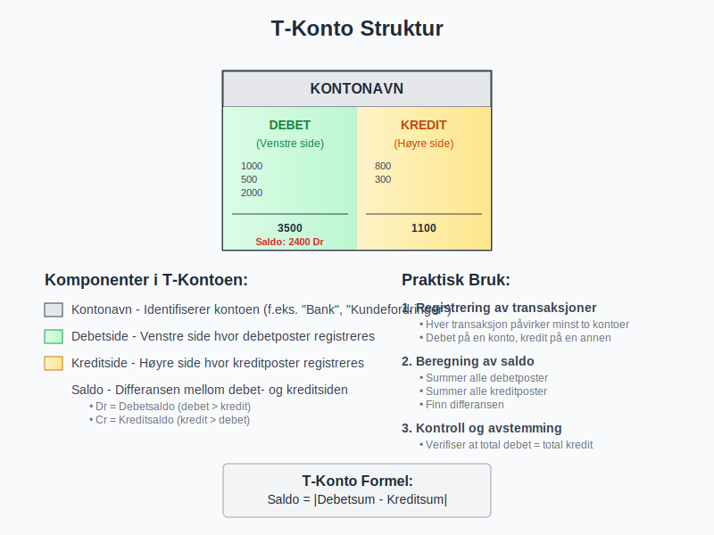
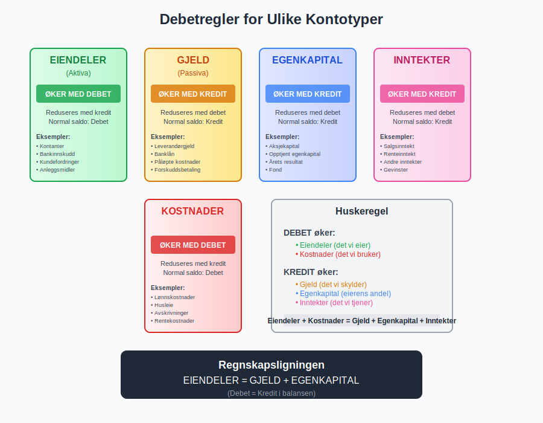
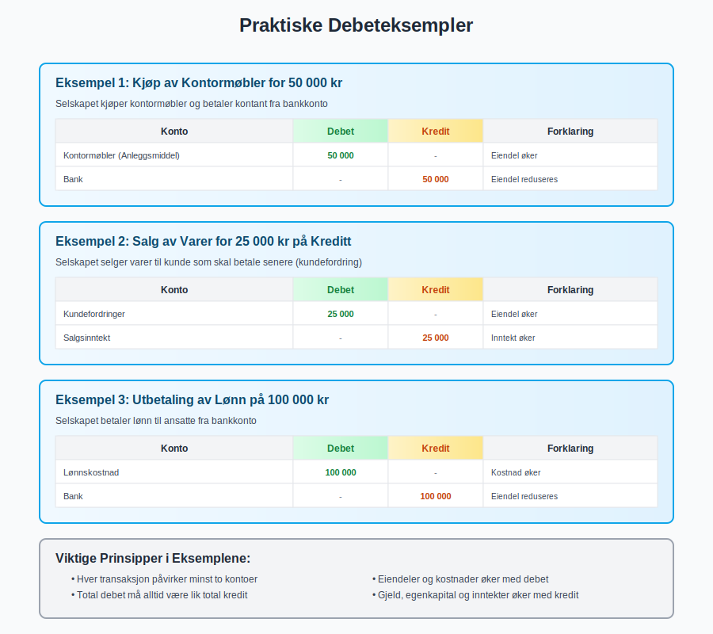
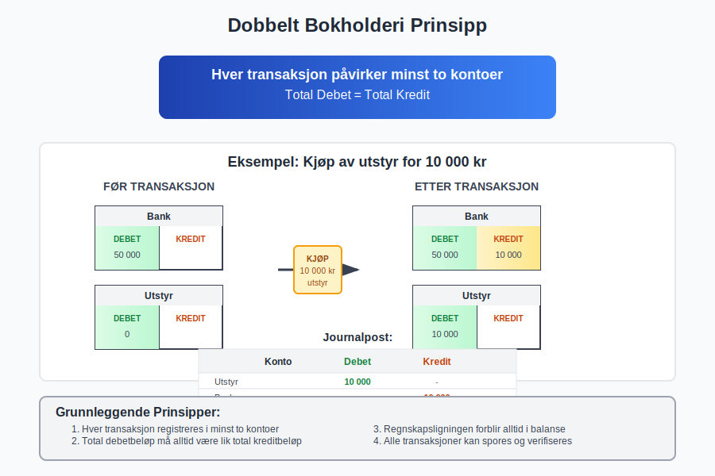
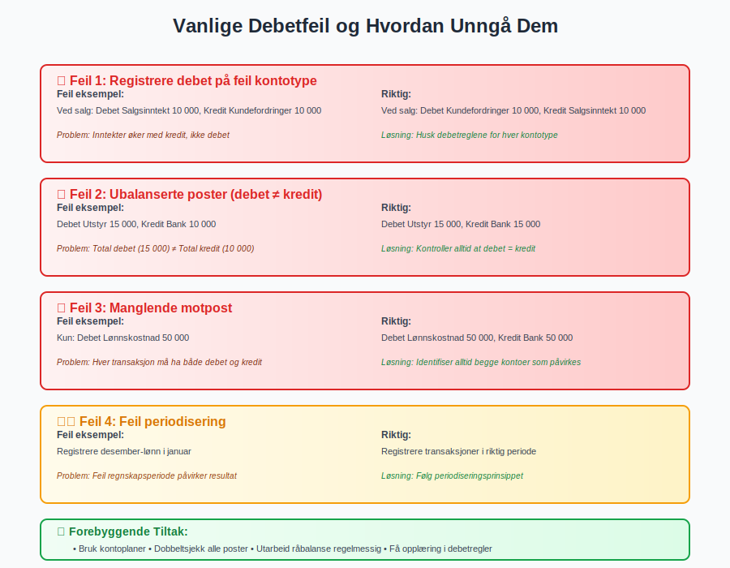
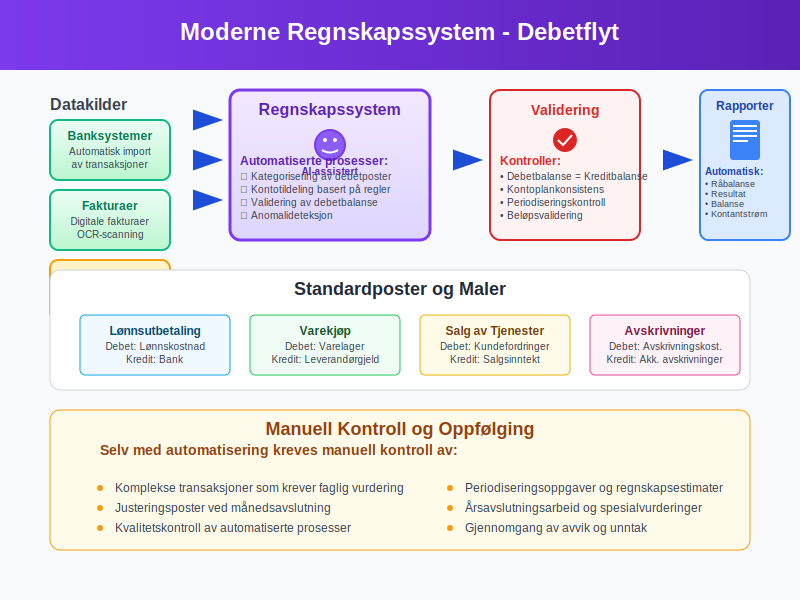
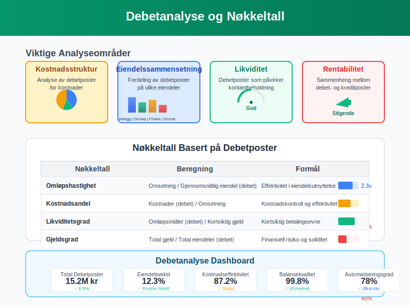

Debet er et av de mest fundamentale begrepene i regnskap og bokføring. Ordet kommer fra det latinske “debere” som betyr “å skylde”, og representerer venstre side av en regnskapskonto. Forståelse av debet er essensielt for alle som arbeider med regnskap, da det danner grunnlaget for dobbelt bokføring som brukes i moderne regnskapsføring.
For en praktisk gjennomgang av hvordan du debitere kontoer, se Debitere.
Hva er Debet?
Debet er en regnskapspost som registreres på venstre side av en konto i dobbelt bokføring. Sammen med kredit (høyre side) utgjør debet grunnlaget for all systematisk bokføring. Hver transaksjon i regnskapet må ha minst én debetpost og én kreditpost, og summen av alle debetposter må alltid være lik summen av alle kreditposter.

Etymologi og Historisk Bakgrunn
Begrepet debet stammer fra det latinske ordet “debere”, som betyr “å skylde” eller “å være skyldig”. Dette reflekterer den historiske bruken av begrepet i handelsbøker, hvor debetposter opprinnelig representerte det som var skyldt til virksomheten. Over tid har betydningen utviklet seg til å bli en mer teknisk regnskapsterm som beskriver en bestemt side av regnskapskontoer.
T-Kontoer og Debetposter
T-kontoen er et visuelt hjelpemiddel som illustrerer hvordan debetposter fungerer. Kontoen er formet som bokstaven “T”, hvor venstre side representerer debet og høyre side representerer kredit.

Struktur av T-Kontoen
| Komponent | Plassering | Funksjon |
|---|---|---|
| Kontonavn | Øverst | Identifiserer kontoen |
| Debetside | Venstre | Registrerer debetposter |
| Kreditside | Høyre | Registrerer kreditposter |
| Saldo | Nederst | Viser netto balanse |
Debetregler for Ulike Kontotyper
Hvordan debet påvirker ulike kontotyper avhenger av kontoens natur. Dette er fundamentalt for å forstå regnskapets logikk:

Eiendelskontoer (Aktiva)
For aktiva gjelder følgende debetregler:
- Økning: Registreres som debet
- Reduksjon: Registreres som kredit
- Normal saldo: Debetsaldo
Eksempler på eiendelskontoer:
- Kontanter og bankinnskudd
- Kundefordringer
- Varelager
- Anleggsmidler
- Immaterielle eiendeler
Gjeldskontoer (Passiva)
For gjeldskontoer gjelder motsatte regler:
- Økning: Registreres som kredit
- Reduksjon: Registreres som debet
- Normal saldo: Kreditsaldo
Eksempler på gjeldskontoer:
- Leverandørgjeld
- Banklån
- Påløpte kostnader
- Forskuddsbetaling fra kunder
Egenkapitalkontoer
Egenkapitalkontoer følger samme mønster som gjeldskontoer:
- Økning: Registreres som kredit
- Reduksjon: Registreres som debet
- Normal saldo: Kreditsaldo
Inntektskontoer
Inntektskontoer øker egenkapitalen og følger derfor samme regler:
- Økning: Registreres som kredit
- Reduksjon: Registreres som debet
- Normal saldo: Kreditsaldo
Kostnadskontoer
Kostnadskontoer reduserer egenkapitalen og følger derfor motsatte regler:
- Økning: Registreres som debet
- Reduksjon: Registreres som kredit
- Normal saldo: Debetsaldo
Praktiske Eksempler på Debetposter
La oss se på konkrete eksempler for å illustrere hvordan debetposter fungerer i praksis:

Eksempel 1: Kjøp av Kontormøbler
Når et selskap kjøper kontormøbler for 50 000 kr:
| Konto | Debet | Kredit |
|---|---|---|
| Kontormøbler (Anleggsmiddel) | 50 000 | |
| Bank | 50 000 |
Forklaring: Kontormøbler (eiendel) øker med debet, mens bank (eiendel) reduseres med kredit.
Eksempel 2: Salg av Varer
Ved salg av varer for 25 000 kr:
| Konto | Debet | Kredit |
|---|---|---|
| Kundefordringer | 25 000 | |
| Salgsinntekt | 25 000 |
Forklaring: Kundefordringer (eiendel) øker med debet, mens salgsinntekt øker med kredit.
Eksempel 3: Betaling av Lønn
Ved utbetaling av lønn på 100 000 kr:
| Konto | Debet | Kredit |
|---|---|---|
| Lønnskostnad | 100 000 | |
| Bank | 100 000 |
Forklaring: Lønnskostnad øker med debet, mens bank (eiendel) reduseres med kredit.
Dobbelt Bokholderi og Debetbalanse
Det dobbelte bokholderisystemet krever at hver transaksjon registreres med både debet- og kreditposter. Dette sikrer at regnskapet alltid er i balanse.

Grunnleggende Prinsipper
- Hver transaksjon må ha minst én debetpost og én kreditpost
- Total debet må alltid være lik total kredit
- Regnskapsligningen må alltid være i balanse: Eiendeler = Gjeld + Egenkapital
Kontroll av Debetbalanse
For å sikre korrekt bokføring, utarbeides regelmessig en råbalanse som viser:
| Kontotype | Normal saldo | Kontrollpunkt |
|---|---|---|
| Eiendeler | Debet | Skal ha debetsaldo |
| Gjeld | Kredit | Skal ha kreditsaldo |
| Egenkapital | Kredit | Skal ha kreditsaldo |
| Inntekter | Kredit | Skal ha kreditsaldo |
| Kostnader | Debet | Skal ha debetsaldo |
Debetposter i Norsk Regnskapspraksis
I Norge følger regnskapsføringen spesifikke standarder og krav som påvirker hvordan debetposter håndteres:
Bokføringsloven og Debetposter
Bokføringsloven stiller krav til:
- Systematisk registrering av alle debetposter
- Kronologisk rekkefølge i journalføringen
- Sporbarhet fra bilag til debetpost
- Oppbevaring av dokumentasjon
Norsk Regnskapsstandard og Debetklassifisering
Norsk regnskapsstandard (NRS) gir retningslinjer for:
- Klassifisering av debetposter
- Periodisering av transaksjoner
- Måling og vurdering av poster
Vanlige Feil ved Debetregistrering

Typiske Feilkilder
- Feil kontotype: Registrere debet på kreditkonto eller omvendt
- Feil beløp: Uriktig beløpsføring
- Manglende motpost: Glemme tilhørende kreditpost
- Feil periodisering: Registrere i feil regnskapsperiode
Forebygging av Feil
- Systematisk kontroll av alle poster
- Regelmessig avstemming mot eksterne kilder
- Bruk av kontoplaner for konsistent klassifisering
- Opplæring i debetregler og -prinsipper
Debetposter og Moderne Regnskapssystemer
Moderne regnskapssystemer automatiserer mye av debetregistreringen, men forståelse av prinsippene er fortsatt essensielt:

Automatiserte Debetposter
- Standardposter: Forhåndsdefinerte debetmaler
- Integrasjoner: Automatisk import fra banksystemer
- Validering: Systemkontroll av debetbalanse
- Rapportering: Automatisk generering av debetrapporter
Manuell Kontroll
Selv med automatisering kreves manuell kontroll av:
- Komplekse transaksjoner
- Periodiseringsoppgaver
- Justeringsposter
- Årsavslutningsarbeid
Debetposter i Spesielle Situasjoner
Valutaomregning
Ved transaksjoner i utenlandsk valuta må debetposter justeres for:
- Kursendringer på balansetidspunktet
- Realiserte og urealiserte kursgevinster/-tap
- Sikringstransaksjoner
Konsernregnskap
I konsernsammenheng krever debetposter spesiell behandling for:
- Elimineringer av interne transaksjoner
- Konsolideringsjusteringer
- Minoritetsinteresser
Sammenheng med Andre Regnskapsbegreper
Debet er tett knyttet til flere andre viktige regnskapsbegreper:
Kredit
Kredit er debets motpart og representerer høyre side av regnskapskontoer. Sammen utgjør debet og kredit grunnlaget for det dobbelte bokholderisystemet.
Balanse
Balansen viser hvordan debetposter påvirker selskapets finansielle stilling på et bestemt tidspunkt.
Resultatregnskap
Debetposter for kostnader påvirker direkte resultatregnskapet og selskapets lønnsomhet.
Kontantstrøm
Debetposter som påvirker kontanter og bankinnskudd reflekteres i kontantstrømoppstillingen.
Debetanalyse og Nøkkeltall
Analyse av debetposter kan gi verdifull innsikt i virksomhetens drift:

Viktige Analyseområder
- Kostnadsstruktur: Analyse av debetposter for kostnader
- Eiendelssammensetning: Fordeling av debetposter på ulike eiendeler
- Likviditet: Debetposter som påvirker kontantbeholdning
- Rentabilitet: Sammenheng mellom debet- og kreditposter
Nøkkeltall Basert på Debetposter
| Nøkkeltall | Beregning | Formål |
|---|---|---|
| Omløpshastighet | Omsetning / Gjennomsnittlig eiendel | Effektivitet i eiendelsutnyttelse |
| Kostnadsandel | Kostnader (debet) / Omsetning | Kostnadskontroll |
| Likviditetsgrad | Omløpsmidler / Kortsiktig gjeld | Betalingsevne |
Digitalisering og Fremtiden for Debetregistrering
Teknologisk utvikling påvirker hvordan debetposter håndteres:
Kunstig Intelligens
- Automatisk kategorisering av debetposter
- Anomalideteksjon for å identifisere feil
- Prediktiv analyse basert på debetmønstre
Blockchain-teknologi
- Uforanderlig registrering av debetposter
- Økt transparens i regnskapsføringen
- Redusert behov for manuell kontroll
Sanntidsregnskap
- Kontinuerlig oppdatering av debetposter
- Øyeblikkelig balansekontroll
- Automatisk rapportering
Oppsummering
Debet er et fundamentalt konsept i regnskap som representerer venstre side av regnskapskontoer. Forståelse av debetregler for ulike kontotyper er essensielt for korrekt bokføring og regnskapsføring.
Viktige Punkter å Huske
- Eiendeler øker med debet, reduseres med kredit
- Gjeld og egenkapital øker med kredit, reduseres med debet
- Kostnader øker med debet, inntekter øker med kredit
- Total debet må alltid være lik total kredit
- Systematisk kontroll er nødvendig for å unngå feil
Praktisk Anvendelse
For å mestre debetregistrering i praksis anbefales det å:
- Øve på praktiske eksempler
- Bruke T-kontoer for visualisering
- Kontrollere regelmessig at debet = kredit
- Holde seg oppdatert på regnskapsregler og -standarder
Debet er ikke bare et teknisk regnskapsbegrep, men et verktøy som gir innsikt i virksomhetens økonomiske aktiviteter og finansielle helse. Med solid forståelse av debetprinsipper kan man bedre analysere og forstå regnskapsinformasjon, noe som er verdifullt både for regnskapsførere, ledere og andre interessenter.